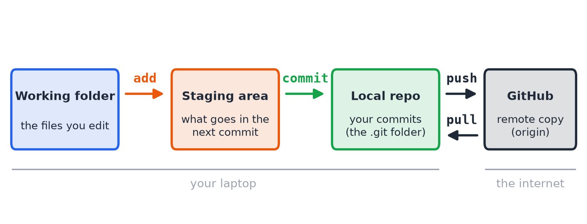
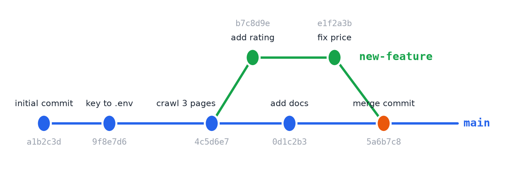
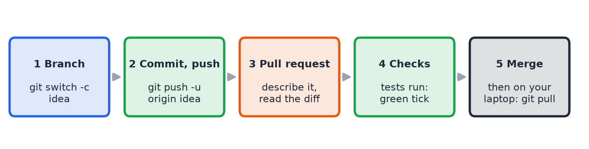

What to type, why it matters, and the habits that save you at 2 a.m. before a deadline. About 40 minutes of reading. Best read with a terminal open next to it.
It is the night before the deadline. Nina has an analysis that finally works: a script, a notebook, a folder of results. At 23:40 she tries a "small improvement". The numbers change, the plots look wrong, and she cannot remember what the code looked like an hour ago. She has analysis.py, analysis_new.py, analysis_final.py and analysis_final_REAL.py, and none of them is the version that worked. Her partner, meanwhile, has sent her their own copy by e-mail, and the two cannot be put together.
Now picture the same night with git. Nina types one command and sees every saved version of her project, with the date and a one-line reason for each. She finds the last good one, brings it back in ten seconds, and goes to bed. Her partner works on a separate line of work and the two are joined at the end. This is what the tool is for.
Every time you save a commit, git stores a snapshot of your whole project. You can list all of them, compare any two, go back to any of them, and see on a graph how the project grew and which branches joined which. You never lose work, and you always know what changed, when, who changed it and why. Everything else in this handbook (branches, pull requests, tests) builds on this one idea. We come back to the history in every section, in green boxes like this one.
| git | GitHub |
|---|---|
| A program on your computer. Free, open source, works without internet. | A website (a company, owned by Microsoft) that stores git repositories online. |
| Records the history of a folder: commits, branches, merges. | Adds what git alone does not have: a backup, a place to share, pull requests, issues, automatic tests (Actions), a visual history. |
You use it through commands: git commit, git log… | You use it in the browser (and git talks to it with push and pull). |
| Could be used alone, with no GitHub at all. | Needs git underneath. GitLab and Bitbucket are alternatives that do the same job. |
A good way to remember: git is the camera, GitHub is the photo album that you share. The history exists in both: git log shows it in the terminal, and GitHub shows it as a clickable timeline and graph.
Almost every confusion with git goes away once you know that your work lives in four places, and that each command moves changes from one place to the next.

| Place | What it is |
|---|---|
| Working folder | The files you see and edit. Normal folder on your disk. |
| Staging area | A waiting room. You choose which changes go into the next snapshot. git add puts changes here. |
| Local repository | The saved history, inside the hidden .git folder. git commit turns the staged changes into a permanent snapshot. |
| Remote (GitHub) | A copy of the repository on the internet. By convention its nickname is origin. git push sends your commits there, git pull brings new ones back. |
Why a staging area at all? You might have changed five files for two different reasons. Staging lets you commit them as two clean snapshots, each with its own message, instead of one messy one.
Git writes your name into every commit. Tell it who you are once (any e-mail works, but use the one of your GitHub account if you want your commits linked to your profile):
git config --global user.name "Your Name" git config --global user.email "you@example.com"
Open a terminal inside your project folder (not the folder above it).
git init # make this folder a repository (creates the hidden .git) git status # what changed? what is staged? run it all the time git add . # stage everything (or name files: git add analysis.py) git commit -m "initial commit" # save the snapshot with a message git branch -M main # call the main branch "main"
On github.com click New repository and give it a name. Leave README, .gitignore and license unticked: the repo must be empty, otherwise your first push is rejected. Copy its URL, then:
git remote add origin https://github.com/<your-user>/<your-repo>.git
git push -u origin main # -u remembers the link, later "git push" is enough
Refresh the page: your files are online. If you work on a laptop you may lose, you now have a backup too.
Ninety percent of your git life is this loop. Repeat it often.
git status # 1. what did I change? git diff # 2. show me the exact lines git add analysis.py # 3. choose what goes into the snapshot git commit -m "drop rows with missing ratings" # 4. save it, with the reason git push # 5. back it up on GitHub
This is the reason to learn git. Every commit has an ID (a hash, like a1b2c3d), a message, an author, a date and a pointer to the commit before it. Together they form a chain: your project's memory.
git log # every commit, newest first, full detail git log --oneline # one line each: short hash + message git log --oneline --graph --all # the shape of history, with all branches git log -p # each commit with its diff git log -5 # only the last 5 git log -- analysis.py # only commits that touched this file git show a1b2c3d # one commit: message, author, the diff

git log --oneline --graph --all draws as text, and what GitHub draws as a picture. A branch splits off from main and joins it again in a merge commit. Each dot is a snapshot you can return to.git diff # working folder vs last commit (not yet staged) git diff --staged # staged changes vs last commit git diff a1b2c3d 4c5d6e7 # any two commits git blame analysis.py # who wrote each line, in which commit
The right command depends on how far the mistake got: only in your folder, staged, committed, or pushed.
| Where is the mistake? | Command | What it does |
|---|---|---|
| Edited a file, not committed, want it back | git restore analysis.py | Throws the edit away and returns the file to the last commit. Cannot be undone, the edit was never saved. |
| Added to staging by mistake | git restore --staged analysis.py | Takes it out of the waiting room, keeps your edit. |
| Committed, already pushed | git revert a1b2c3d | Makes a new commit that undoes that one. The history stays honest, nothing is rewritten, safe for shared work. |
| Need an old version of one file | git restore --source a1b2c3d analysis.py | Copies that file from the old commit into your folder. Then commit it if you want to keep it. |
| Just want to look at the old project | git switch --detach a1b2c3d, then git switch main to return | Shows the whole project as it was. Do not commit here, go back to main when done. |
git reset --hard and git push --force rewrite or destroy history. Do not use them on a branch other people use. When in doubt, prefer revert: it adds to the history instead of erasing it.
At 23:40 she runs git log --oneline, finds "results table matches the paper" from 21:15, and runs git restore --source 4c5d6e7 analysis.py. The working version is back. She commits it with a message and goes to sleep. This only works because she committed at 21:15.
A repository keeps everything you commit, forever. If you commit a password or an API key and push it, anyone who sees the repository can see it, and it stays visible in the history even after you delete the line. Bots scan public repositories for keys within minutes.
# .env (one NAME=value per line, stays on your computer)
API_KEY=sk-demo-1234567890abcdef
# in your Python code import os from dotenv import load_dotenv # pip install python-dotenv load_dotenv() # reads .env when the program starts API_KEY = os.getenv("API_KEY") # the secret is never written in the code
The same applies to anything model or API related: a Hugging Face token, an OpenAI key, a database password.
A file called .gitignore lists names git should leave alone. A typical one for a data science project:
.env # secrets .venv/ # the virtual environment: big, and can be rebuilt __pycache__/ # Python's cache .ipynb_checkpoints/ *.parquet # big or generated data, do not put in git results/ # output that code can recreate
.gitignore only affects files git is not yet tracking. If you already committed .env (even empty), editing .gitignore is not enough. Stop tracking it, but keep the file on your disk:
git rm --cached .env
(For a folder: git rm -r --cached .venv.) If a real key was already pushed, deleting it is not enough: it is in the history. Rotate it (create a new key, disable the old one).
requirements.txt: one library per line. Anyone can rebuild your environment with pip install -r requirements.txt. (pip freeze prints everything installed, with exact versions.).env.example: the same names as your .env but with fake values (API_KEY=your-key-here), committed to the repo, so a teammate knows which settings to create.README.md: what the project does, how to set it up, how to run it.python -m venv .venv # an environment just for this project .venv\Scripts\Activate.ps1 # Windows (Mac/Linux: source .venv/bin/activate) pip install -r requirements.txt
A branch is a separate line of work. main stays as it was, so you can try an idea without risk, and join it back only if it works. Branches are cheap in git: a branch is just a pointer to a commit.
git branch # list branches, * marks the current one git switch -c add-rating # create a branch and move to it # ...edit, then: git add crawler.py git commit -m "add rating to each book" git push -u origin add-rating # first push of this branch git switch main # go back: the new work is not here yet! git merge add-rating # bring the branch into main git push git branch -d add-rating # delete the finished branch
When you switch branches, the files in your folder change to match that branch. That is not magic: git is replacing them with the snapshot of the branch you chose.
Look back at Figure 2. Each experiment is a short green line that you can name (add-rating, fix-missing-values), and the merge commit records the moment it joined main. When a result changes and you wonder why, the graph tells you which branch introduced it.
Ana wants to add a rating column. Ben, at the same time, wants to fix how missing values are handled. If both edit main directly, they overwrite each other and main is broken half of the time. So each one works on a separate branch, started from main: one branch per feature or fix, named after it (add-rating, fix-missing-values). An experiment you are unsure about gets its own branch too: if it fails you delete it and main never knew.
main in a team. Teammates read the diff, the tests run, and only then is it merged.main on GitHub has Ana's work, and Ben's laptop does not. Ben runs git switch main and git pull to download it.main into it (git merge main) so that he builds on the latest version, and fixes any conflict on his side, before his own pull request.When do I use pull? Before you start working (get the latest), after a pull request was merged (update your laptop), and whenever a teammate says "I pushed". push sends your work, pull receives other people's.
| Kind | What happens, and when to use it |
|---|---|
| Fast-forward | main did not move since the branch started, so git just moves the pointer forward. No extra commit, a straight line. Happens when you work alone. |
| Merge commit | main moved too, so git creates a new commit with two parents that joins both lines (the orange dot in Figure 2). Keeps the full history of the branch. GitHub button: Create a merge commit. |
| Squash | All commits of the branch become one commit on main. Keeps main short, loses the small steps. GitHub button: Squash and merge. |
If two branches change the same line differently, git cannot decide and stops the merge. It writes both versions into the file between markers:
<<<<<<< HEAD PAGES = 3 ======= PAGES = 5 >>>>>>> add-rating
Open the file, keep what you want, delete the three marker lines, then git add the file and git commit. It is normal, not a failure. Small, frequent commits and pulling often keep conflicts rare and small.
A pull request (PR) is a proposal on GitHub: "please merge my branch into main". It is the same merge as above, with a place to review and test first. In a team nobody pushes straight to main.

git push -u origin your-branch.main, and it is what a reviewer reads. Read it yourself first: you will often spot your own mistake.git switch main git pull # download what is new on GitHub and merge it into your branch git log --oneline --graph # the branch splits off and joins back
pull vs merge vs fetch. merge joins one branch into another on your machine. pull downloads from GitHub and merges. git fetch only downloads, so you can look at what is new before changing anything.
A test is a small piece of code that checks that other code still does what it should. In Python with pytest, a test is a function whose name starts with test and contains an assert:
def clean(text): # in quotes.py return text.strip("“”") def test_clean(): # in test_quotes.py assert clean("“Hello”") == "Hello" # fails loudly if clean() ever breaks
Run them with pip install pytest and then pytest. Break the assert on purpose once, to see what a failing test looks like.
Why write tests? You change code all the time, and every change can silently break something else. A test tells you in seconds. What to test: the small functions that do a calculation (a metric, a cleaning step, a parser), with an input whose answer you know. You do not test everything: start with the functions whose failure would ruin your results. When it runs: on your machine before you commit, and on GitHub automatically in every pull request.
A small file in your repo, .github/workflows/test.yml, tells GitHub to start a clean computer every time a pull request is opened, install your libraries from requirements.txt, and run pytest. The PR then shows a green tick or a red cross. This is called continuous integration (CI).
requirements.txt forgets a library, the check fails with ModuleNotFoundError. That is a real proof that your project can be set up by someone else.main.Each commit on GitHub can carry its own green tick or red cross. When something breaks, you can scroll the history and find the first red commit: that is the change that broke it. Without history and tests you would be guessing.
A repo page is more than a folder of files. These are the parts you will meet:
| Part | What it is for |
|---|---|
| Code | The files, the branch dropdown, the commits counter (the history) and the green Code button with the URL to clone. The README is shown below the files: it is the front page of your project. |
| Issues | A to-do and bug list. Write "the metric fails on empty input", assign it to someone, and close it from a commit or PR with fixes #3. |
| Pull requests | Proposed merges: the diff, the discussion, the line comments, the approvals and the check results. |
| Actions | The automatic runs (tests) from .github/workflows, with logs for each run. |
| Insights | Contributors, activity, and the Network graph of all branches. |
| Settings | Who can access the repo (collaborators), public or private, and rules such as branch protection (no merge while checks fail). |
| Fork, Releases | Fork: your own copy of someone else's repo, to propose changes by a PR. Release: a named version (v1.0) you can download, such as the state you hand in. |
fix wrong denominator in kappa, not changes or asdf.git status and git diff before every commit. It catches the secret file you were about to publish.git add . until your .gitignore is right.main at least.git pull before you start working, so you build on the latest version.main directly.push --force on shared branches..env, never in the notebook.git log: if your history tells the story of your work, you did it right.| Command | Why you use it |
|---|---|
git init | Start tracking a folder. Creates the hidden .git with the history. |
git clone <url> | Get a full copy of a GitHub repo, with all its history, on your computer. |
git status | See what changed and what is staged. Run it before every commit. |
git diff · --staged | See the exact lines you changed, before you save them. |
git add <file> | Choose what goes into the next snapshot. |
git commit -m "…" | Save the snapshot with the reason. This is what makes the history. |
git push | Back up your commits on GitHub and share them. |
git pull · git fetch | Get what others pushed (pull also merges it; fetch only looks). |
git log --oneline --graph --all | Read the history and see how branches split and joined. |
git branch · git switch -c <name> | List branches, or start a separate line of work without risk to main. |
git switch <name> | Move between lines of work (the files in your folder change). |
git merge <name> | Bring a finished branch into the current one. |
git restore <file> | Throw away an uncommitted edit. |
git revert <id> | Undo a commit that is already pushed, without rewriting history. |
git rm --cached <file> | Stop tracking a file (such as .env) but keep it on your disk. |
| What you see | Why, and what to do |
|---|---|
| Push rejected: "fetch first" or "unrelated histories" | The GitHub repo was created with a README or .gitignore. Easiest: delete it on GitHub, create an empty one, push again. |
git commit opens a strange text editor | You forgot -m "message". Press Esc, type :q!, Enter, and try again with -m. |
| I am scared I broke everything | Run git status, then git log --oneline. Committed work is almost never lost; this is exactly why we commit. |
More: GitHub's official cheat sheet (PDF in the lab folder), docs.github.com and the free book Pro Git (git-scm.com/book).
Commit early. Commit often. Look at your history.